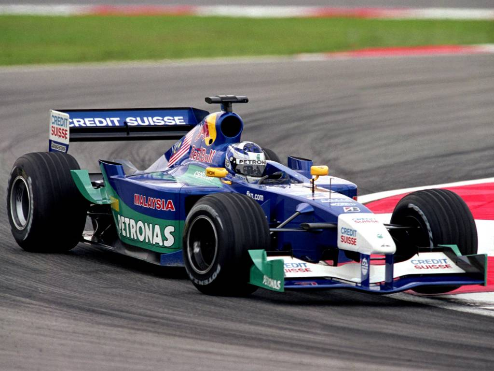
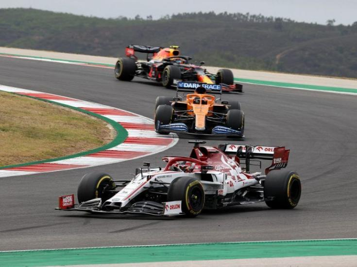
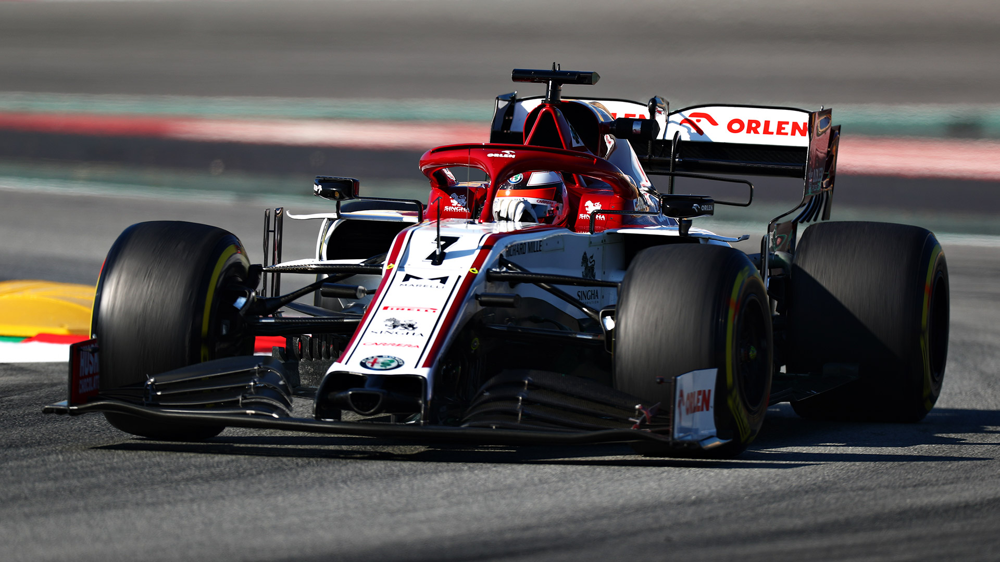
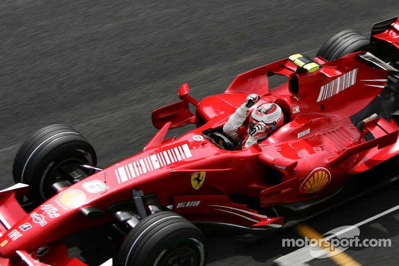

<!DOCTYPE html>
<html lang="hu">
<head>
    <meta charset="UTF-8">
    <meta http-equiv="X-UA-Compatible" content="IE=edge">
    <meta name="viewport" content="width=device-width, initial-scale=1.0">
    <link rel="stylesheet" href="style.css">
    <link rel="stylesheet" href="css/bootstrap.min.css">
    <title>Kimi Räikkönen</title>
</head>
</html>
<body>
    <div class="container">
        <header>
            <h1>Kimi Räikkönen</h1>
            <h3>(Espoo, 1979. október 17. – ) finn autóversenyző, 2007 Formula–1-es világbajnoka.</h3>
        </header> 

        <nav class="navbar navbar-expand-md">
            <div class="collapse navbar-collapse">
                <ul class="navbar-nav">
                    <li class="nav-item">
                        <a class="nav-link" href="#palyafutasa">Pályafutása</a>
                    </li> 
                    <li class="nav-item">
                        <a class="nav-link" href="#csapat">Csapatvezetői tevékenysége</a>
                    </li>
                    <li class="nav-item">
                        <a class="nav-link" href="#eredmenyei">Eredményei</a>
                    </li>
                    <li class="nav-item">
                        <a class="nav-link" href="#fotok">Fotók</a>
                    </li>

                    <li class="nav-item">
                        <a class="nav-link" href="#rekordok">Formula–1-es rekordjai</a>
                    </li>

                    <li class="nav-item">
                        <a class="nav-link" href="#hivatkozasok">Külső hivatkozások</a>
                    </li>
                </ul>
            </div>
        </nav>

        <h2 id="palyafutasa">Pályafutása</h2>
        <div class="foto">
            
            <p class="kepalairas">Kimi Räikkönen</p>
        </div>
        <p>Legismertebb beceneve az Iceman, azaz Jégember, amely nyugodt természetére és északi származására utal. A felirat bukósisakján, illetve bal alkarjára tetoválva is látható.</p>
        <p>2010-től ralizni kezdett, majd 2012-től visszatért a Formula–1-be a Lotus F1 Team csapat versenyzőjeként. Több ízben sikerült felállnia a dobogóra, Abu-Dzabiban csapata első győzelmét is megszerezte. 2014-ben visszaigazolt a Ferrarihoz. 2018-ban jelentették be, hogy a szerződését a Ferrarinál nem hosszabbítják meg, ezért a 2019-es versenyévadtól az Alfa Romeo pilótája lett.</p>
           
        <h2 id="csapat">Csapatvezetői tevékenysége</h2>
        <p>2004 novemberében Kimi Räikkönen és menedzsere, Steve Robertson bejelentették, hogy Räikkönen Robertson Racing néven Formula–3-as csapatot alapítanak, aminek operatív vezetését Robertson végzi, a finn versenyző gyakorlatilag csak a nevét és a pénzt adja hozzá.</p>

        <h2 id="rekordok">Formula–1-es rekordjai</h2>
        <ul>
            <li>2005-ben és 2008-ban is beállította Michael Schumacher rekordját, aki a 2004-es szezon során 10 alkalommal futotta meg a verseny leggyorsabb körét.</li>
            <li>Michael Schumacher után ő rendelkezik a legtöbb leggyorsabb körrel (46) a Formula-1 történetében.</li>
            <li>2008-ban hat egymást követő futamon (Spanyolországban, Törökországban, Monacóban, Kanadában, Franciaországban és Nagy-Britanniában) is megfutotta a verseny leggyorsabb körét. Ugyanez egy szezonon belül rajta kívül csak Alberto Ascarinak sikerült 1952-ben.</li>
            <li>Räikkönen volt az első versenyző Nigel Mansell 1989-es brazíliai győzelme óta, aki megnyerte a ferraris debütáló versenyét. Rajtuk kívül ez a tett csak Juan-Manuel Fangionak (1956) sikerült előttük, míg később, 2010-ben Fernando Alonso is megszerezte a győzelmet első ferraris versenyén, a 2010-es bahreini nagydíjon.</li>
            <li>A 2008-as francia nagydíjon Räikkönen megszerezte a Ferrari kétszázadik pole-pozícióját.</li>
        </ul>

        <h2 id="eredmenyei">Eredményei</h2>
        <table class="table table-striped">
            <tr>
                <th>Nagydíjak száma</th><td>332 (329 rajt)</td>
            </tr>
            <tr>
                <th>Világbajnoki címek</th><td>1 (2007)</td>
            </tr>
            <tr>
                <th>Győzelmek</th><td>21</td>
            </tr>
            <tr>
                <th>Dobogós helyezések</th><td>103</td>
            </tr>
            <tr>
                <th>VB-pontok</th><td>1863</td>
            </tr>
        </table>

        Fotók
        <div class="row">
            <div class="col-xl-6"></div>
            <div class="col-xl-6"></div>
            <div class="col-xl-6"></div>
            <div class="col-xl-6"></div>
            <div class="col-xl-6 offset-xl-3"></div>
        </div>
       
        <footer>
            <h2 id="hivatkozasok">Külső hivatkozások</h2>
            <a href="https://hu.wikipedia.org/wiki/Kimi_R%C3%A4ikk%C3%B6nen" target="_blank"> Forrás Wikipédia</a>
        </footer>
    </div>
    
	<script src="js/popper.min.js"></script>
    <script src="js/bootstrap.min.js"></script>
    
</body>
</html>